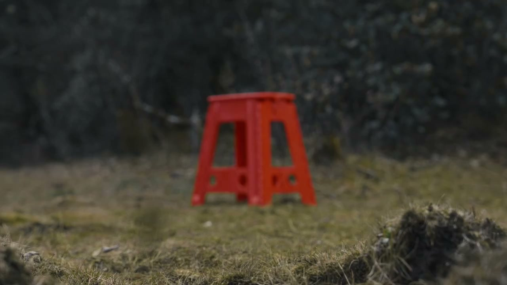
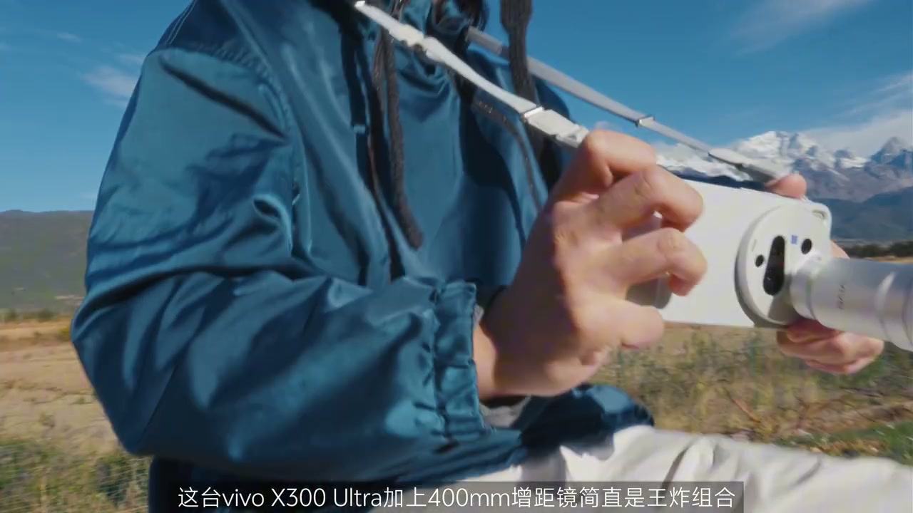
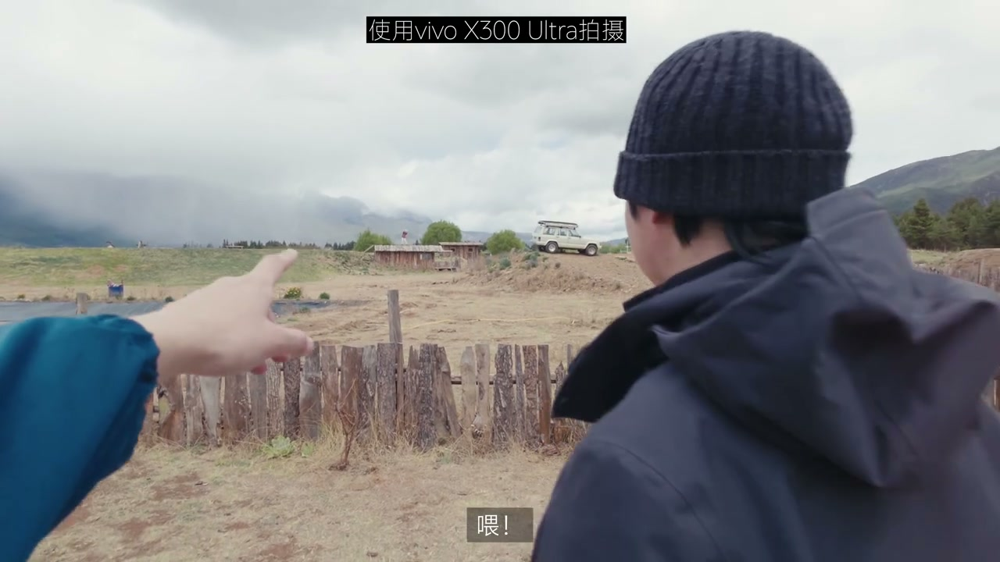
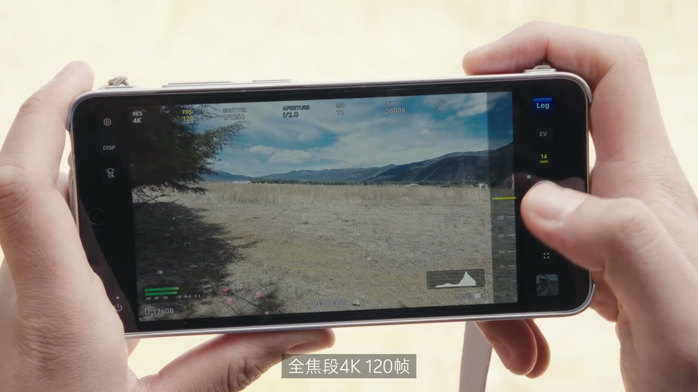
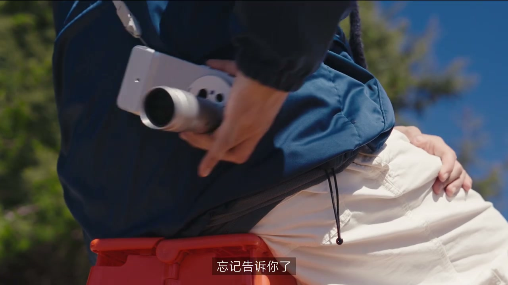
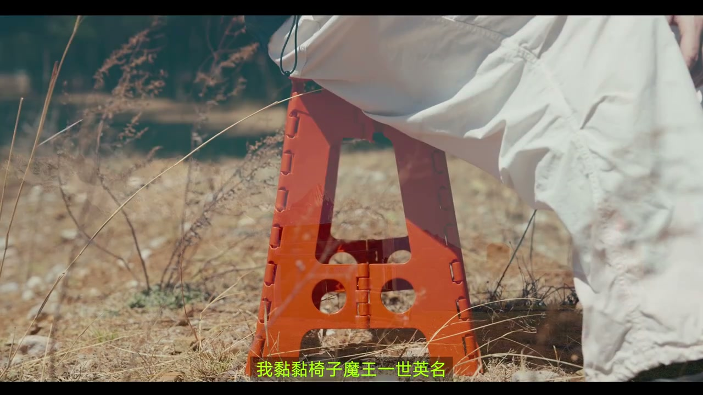
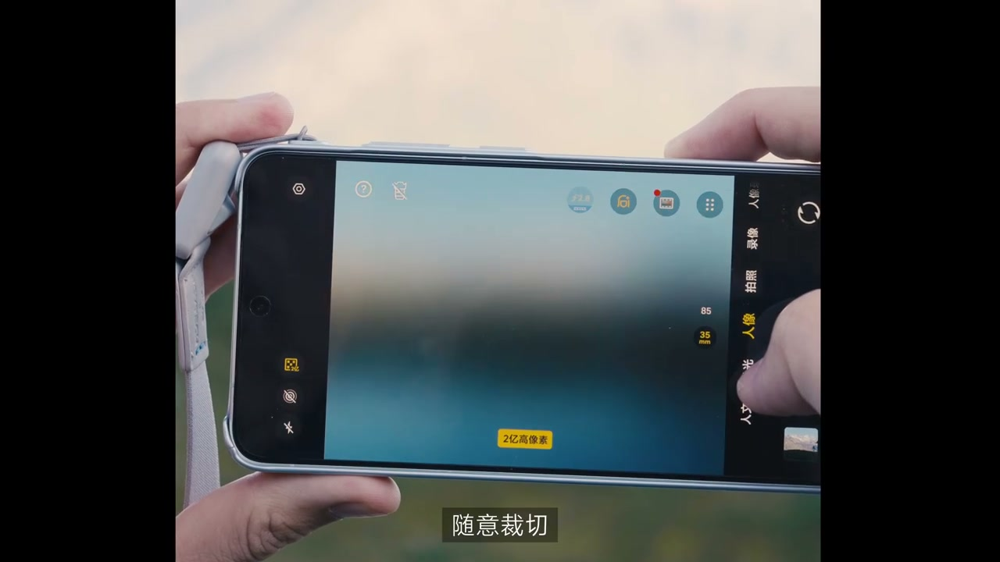

内容要点
[00:00] 旅行中千万要小心这样的椅子
[00:02] 尤其在你精疲力尽的时候
[00:04] 因为它很可能是
[00:15] 你要干什么
[00:30] 冲他的口袋
[00:33] 一部手机
[00:34] 再偷一下另一边
[00:38] 一根铁棒
[00:39] 是三绪镜头了
[01:01] 太强了
[01:03] 这台VOX300 Ultra
[01:04] 加上400毫米灯镜镜
[01:06] 也是王炸组合
[01:07] 真的是一目千里
[01:09] 搭配它本来的三颗大师定交镜头
[01:11] 原地轻松获得不同景别
[01:13] 我甚至可以这样拼到一起
[01:20] 除此之外
[01:21] 其实这种游远道径放大的感觉
[01:23] 本身就很有意思
[01:24] 用来做旅行片头应该很不错
[01:29] 那个人在干什么呀
[01:30] 他不会在过去吧
[01:41] 你这是作弊呀
[01:42] 怎么要望远镜啊
[01:43] 望远镜
[01:46] 我那个人还可以这样拍呀
[01:58] 为什么看起来都这么有故事感
[02:00] 因为慢
[02:02] 全交断4K120帧
[02:04] 说能将旅行中的情绪放大
[02:06] 增添失忆
[02:07] 更重要的是
[02:08] 所有转瞬即逝
[02:09] 来不及追赶的细节
[02:11] 我做在原地
[02:12] 就一无一打击
[02:17] 但 即便这样
[02:18] 这可是手机呀
[02:20] 你的颜色怎么可以
[02:22] 对不起 王爹告诉你了
[02:23] 这才是一个
[02:25] 对不起 王爹告诉你了
[02:26] 这台手机所有的规格
[02:27] 都可以拍10bit Log
[02:29] 有足够的空间
[02:30] 根据天气情绪
[02:31] 场景调出对应的风格
[02:33] 我可以直接用这台
[02:34] Vivo Pad 6 Pro
[02:36] 现场调给你看
[02:37] 顺便加上手挥动画
[02:48] 来得调色呢
[02:49] 我只有直接电影感
[02:51] 怎么办
[02:53] 郑重夏淮呀 朋友
[02:55] 正好可以让大家
[02:56] 感受一下
[02:57] fume look 滤镜的美丽
[02:59] 怎么样 价限吗
[03:01] 顺便调点
[03:02] 这不重要
[03:03] 重要的是
[03:04] 不会调色
[03:05] 也可以原地出片了
[03:12] 怎么会这样
[03:13] 我年龄椅子
[03:14] 魔王仪式英明
[03:15] 嗨 哥们
[03:16] 帮我拍张照呗
[03:17] 戴紧的 全的
[03:18] 还有大脸的特写
[03:20] 都来几张呗
[03:22] 傻了吧
[03:23] 过不去了吧
[03:24] 人家要近的
[03:25] 我看你咋
[03:33] 两亿人像随意采切
[03:35] 你可以拉大变成特写
[03:37] 可以把主体
[03:38] 放在不同的位置
[03:39] 在这个像素下
[03:40] 都很清晰
[03:41] 原地拍一张
[03:42] 等于好几张
[03:44] 服了吗
[03:46] 是不是什么拍法
[03:48] 想学啊
[03:49] 我教你






